Префектура Гифу · Такаяма · ремесло
Хида-ити-иттобори: резьба из тиса, которую не красят
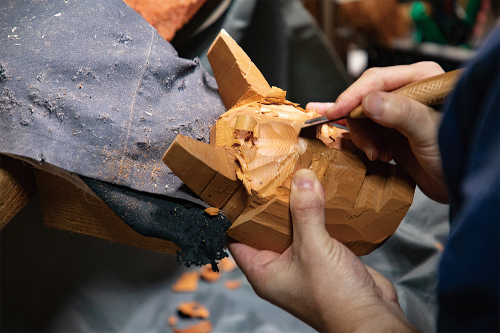
В Такаяме, горном городе на севере префектуры Гифу, из японского тиса режут фигурки и маски и никогда их не красят. Цвет дают сам тис и время. Двое мастеров показывают, как устроено ремесло Хида-ити-иттобори и куда оно движется.
Ремесло
Резьба, которую делает цвет дерева
Край Хида с древности называют «деревней мастеров»: горы кормили местных жителей лесом, и плотники и резчики отсюда славились по всей стране. Хида-ити-иттобори считается одним из главных ремёсел Такаямы и входит в список традиционных ремёсел Японии.
Началось всё в конце периода Эдо (1603–1868). Местные резчики стали делать нэцкэ, миниатюрные фигурки-брелоки, из японского тиса, который рос в горах Хида. Их не раскрашивали, а оставляли красоту древесных волокон как есть. Из этого и выросла резьба, которая стала визитной карточкой края.
Тис по-японски «ити-и», что значит «первый ранг». По преданию, это имя дереву около 800 лет назад пожаловал император. Тис растёт медленно, годовые кольца у него плотные, рисунок волокон красивый, а с годами древесина темнеет и становится глубже по цвету. Чтобы вырасти до 40 см в диаметре, ему нужно 300–400 лет, и при этом он легко засыхает.
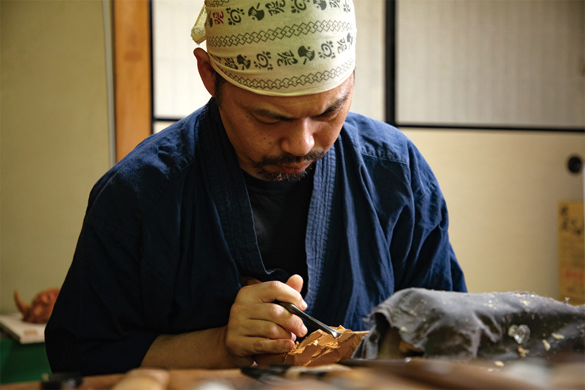
Сначала тис сушат. Потом мастер смотрит, как идут волокна и где проходит граница между светлой древесиной у коры и красноватой сердцевиной, и выпиливает заготовку так, чтобы игра двух оттенков совпала с будущей формой. Режут вручную, пилой и стамесками. Следы стамески на поверхности не шлифуют, и краску не наносят никогда. Так получаются звери, будды, маски с точно схваченным выражением лица.
Мастер
Аяюки Косака: «смотри и кради»
Аяюки Косака представляет второе поколение мастерской «Косака тёбо». Он режет и классические сюжеты, и собственные, придуманные с нуля, а в 2020 году сделал резьбу для полки, которую выпустили вместе с итальянским автопроизводителем FIAT.
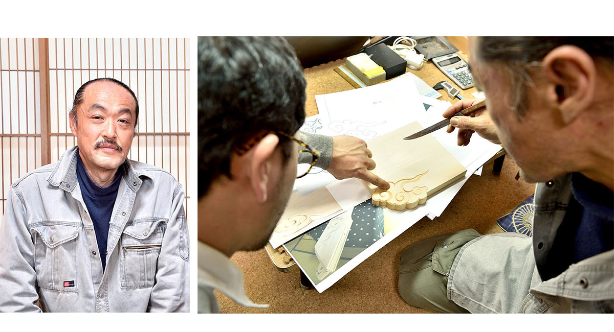
Учился он у отца, но говорит, что не помнит ни одного урока в обычном смысле. В мире ремесла действует правило «смотри и кради».
«Покажешь отцу, что сделал, а он молча раскалывает это топором. И всё. Только сейчас понимаю, сколько он мне тогда объяснил: и про резьбу, и про жизнь»
Аяюки Косака
Больше всего ему нравится создавать с нуля форму, которую видишь в голове. Самая трудная часть, по его словам, первая: выпилить из бревна крупную заготовку.
«Некоторые мастера говорят: форма уже сидит в дереве, её остаётся только достать. Всё не так просто. Я занимаюсь этим больше 30 лет, до сих пор мучаюсь и ни одной работой не доволен до конца. Всегда кажется, что можно лучше»
Аяюки Косака
Что значит «иттобори», «резьба одним ножом», толкуют по-разному. Отец объяснял ему так: в каждый удар ножа вкладывай душу. Самих инструментов в мастерской несколько сотен.
По словам мастера, последние лет десять, то есть примерно с 2010 года, тиса почти не осталось, и ему приходится брать другую древесину. Но любое дерево росло десятки, а то и сотни лет, поэтому ошибаться нельзя: фарфор или железо можно переделать, а дерево назад не вернёшь.
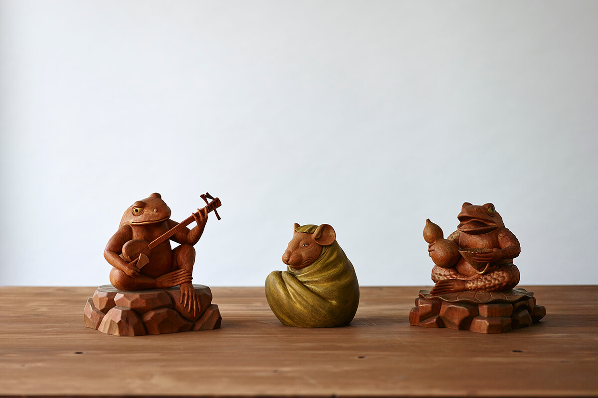
Чтобы ремесло жило дальше, нужны ученики, а чтобы держать учеников, мастерской нужна прочная экономическая основа. Выход он видит один: продолжать делать хорошие вещи, которые радуют людей. Фигурки из тиса, считает Косака, полны жизни.
«Посмотришь на неё и думаешь: ага, ты здесь. И невольно улыбаешься. Если в напряжённые дни такое присутствие рядом кого-то успокоит, я буду рад»
Аяюки Косака
Полка для FIAT
В 2020 году FIAT вместе с некоммерческой организацией Made in Japan Project выпускал вещи японских мастеров в рамках проекта FIAT × MADE IN JAPAN PROJECT. Одной из них стала полка из драгоценного тиса и стали. На краю второй полки Косака вырезал узор.
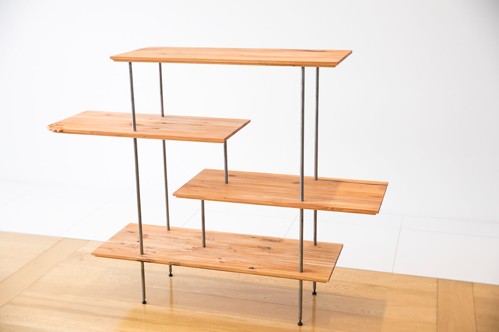
Мотив подсказали «тигаидана», ступенчатые полки в традиционной японской гостиной. Говорят, их форму придумали, глядя на облака, которые тянет ветер. Поэтому и на этой полке появился узор летящих облаков.
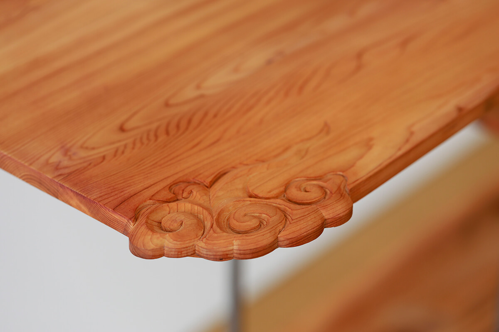
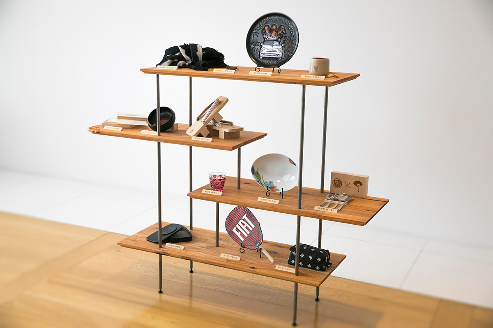
Резать узор прямо на мебели Косаке пришлось впервые.
«Чтобы передать традицию будущему, нельзя уходить в оборону, нужно всё время делать новое. Без развития нет продолжения»
Аяюки Косака
Мастер
Мокудзин Васидзука: маски ханнья и звери года
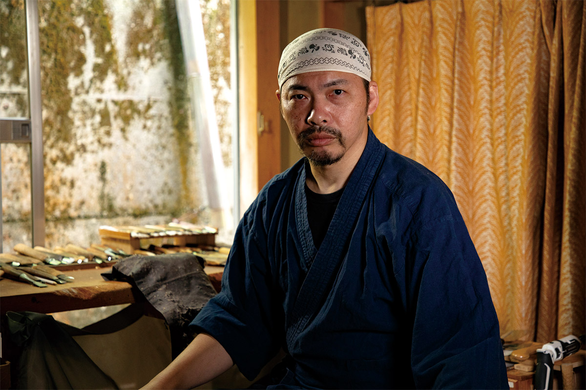
Мокудзин Васидзука родился в 1971 году в префектуре Гифу. После школы он пошёл в ученики к мастеру ити-иттобори, а в 1996 году открыл свою мастерскую «Васидзука тёкоку». В 2021 году он входил в правление кооператива резчиков Хида-ити-иттобори. Он режет и традиционные, и современные вещи: маски ханнья, семь богов счастья, зверей восточного календаря, сов, черепах, дарума. В основе его работы классическая техника и стиль, но он ищет новые возможности ремесла.
Васидзука смотрит на рисунок волокон твёрдого и упругого тиса возрастом 300–500 лет и режет то тонко, то смело, чтобы дерево показало себя целиком.
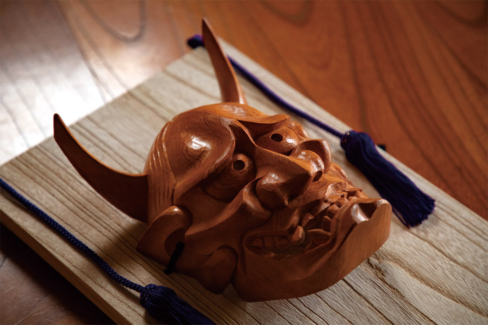
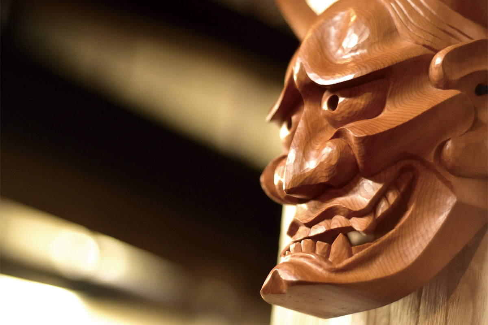
Одна из главных его работ это маска ханнья, лик ревнивой демоницы из театра но. Её вешают как оберег. Рядом стоят фигурки животных восточного календаря: милые сразу, а с годами всё глубже по цвету.
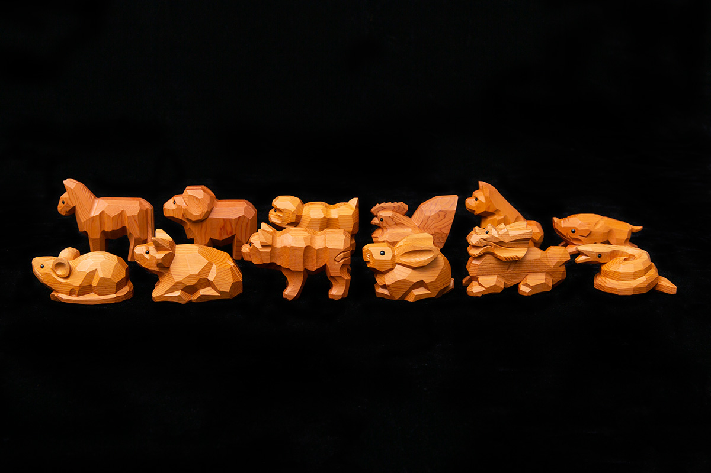
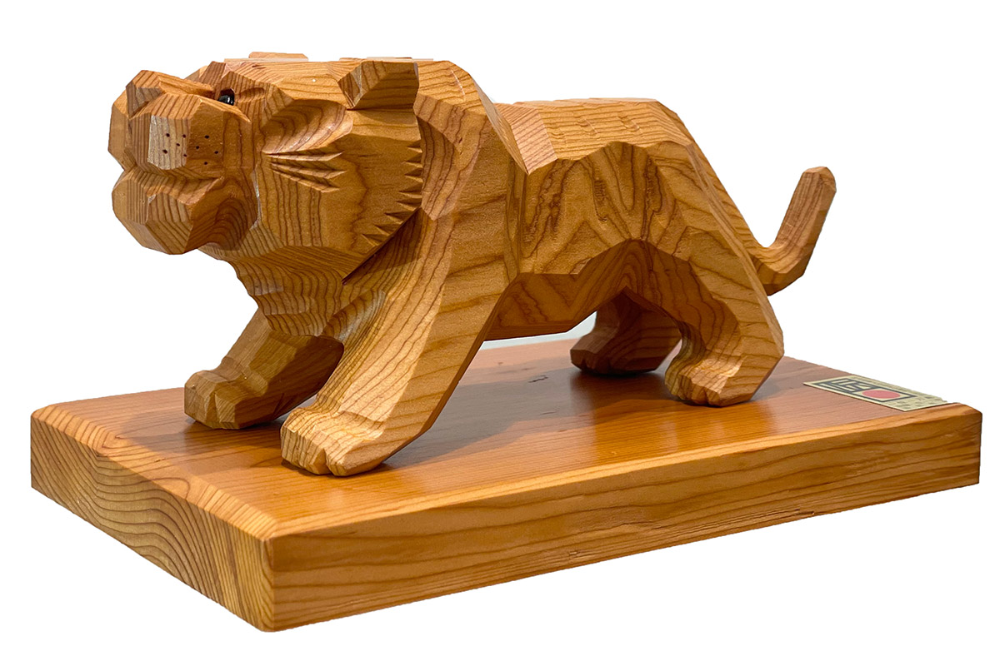
Где увидеть
Работы мастеров в музее
Три работы Аяюки Косаки в 2020 году были выставлены в музее «Мюдзиаму Хида». Он находится в Такаяме, в комплексе Hida Earth Wisdom Center.
Музей «Мюдзиаму Хида»
- Адрес
- префектура Гифу, Такаяма, Тисима-мати, 900-1, Hida Earth Wisdom Center
- Сайт
- hida-center.jp
Фото: Кадзуя Хаяси, bird and insect.